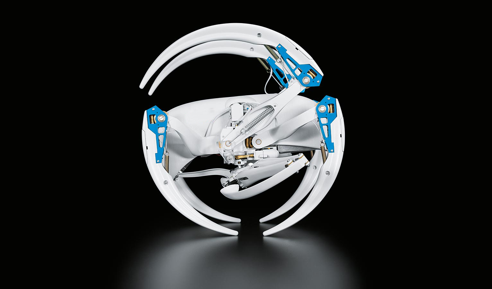

BionicWheelBot
如同摩洛哥后翻蜘蛛一样行走与翻滚
全新的驱动概念和令人惊叹的运动形式在我们的仿生学习网络中一直发挥着重要作用。BionicWheelBot是一款独具特色的行走机器人，以摩洛哥后翻蜘蛛为灵感。

BionicWheelBot的生物样板为摩洛哥后翻蜘蛛（cebrennus rechenbergi）——一种生活在撒哈拉边缘比沙丘沙漠的蜘蛛，由柏林技术大学仿生学教授Ingo Rechenberg 于2008年发现。这种蜘蛛可以与其同类一样行走，但也能够以空中翻转与地面翻滚的组合形式移动。
摩洛哥后翻蜘蛛：完美适应生存环境
这种移动方式非常适合其生存环境：在水平地面上，翻滚移动模式的速度是普通行走的两倍。而在颠簸的地面上，则可对动作予以分解。由此，在两种地形相互交替的沙漠地势中， 这些生物能够安全快速地移动。

自从被发现后，Rechenberg教授便开始对这种运动模式的技术转化发起研究。对蜘蛛行为的研究促成了多种能够在复杂地形上移动的机器人。BionicWheelBot的运动和驱动机制由 这位柏林科学家与我们的仿生学团队共同开发。
